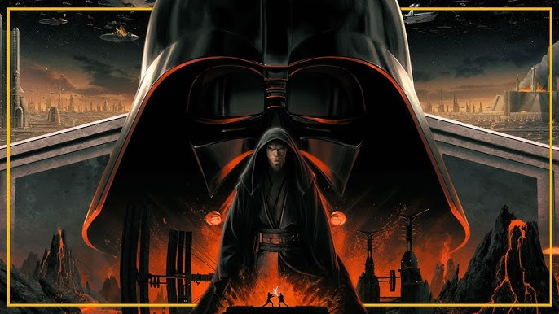

🗞️ Últimas Noticias

Nuevo tráiler de 'Andor'
'Andor' finaliza su segunda temporada consagrándose como una de las mejores producciones de Star Wars.
Leer más
Ahsoka: ¿Habrá segunda temporada?
Lucasfilm evalúa el éxito de la primera temporada antes de confirmar nuevos episodios.
Leer más¿Qué sigue para Star Wars?
Se anunciaron 3 nuevas películas que expandirán el universo más allá de la saga Skywalker.
Leer más💬 Lo que dicen los fans
“The Mandalorian devolvió la magia a Star Wars. ¡Grogu es lo mejor!”
- JediFan88
“Rogue One fue una obra maestra inesperada. Intensa y bien escrita.”
- SableRojo
“Star Wars: Rebels me hizo amar aún más a los personajes del universo expandido.”
- Skywalker91